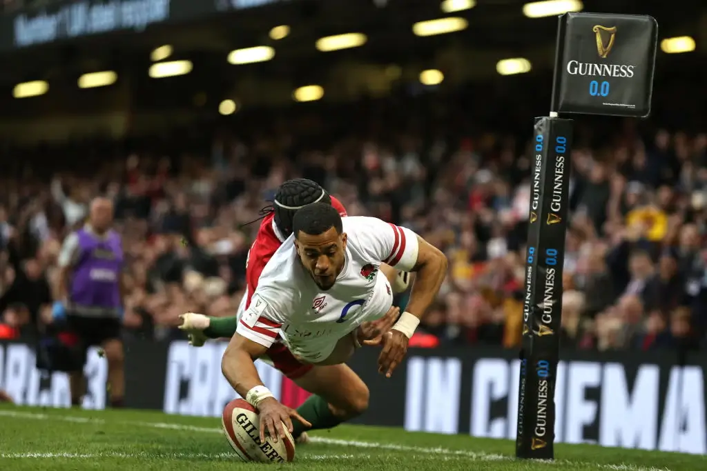
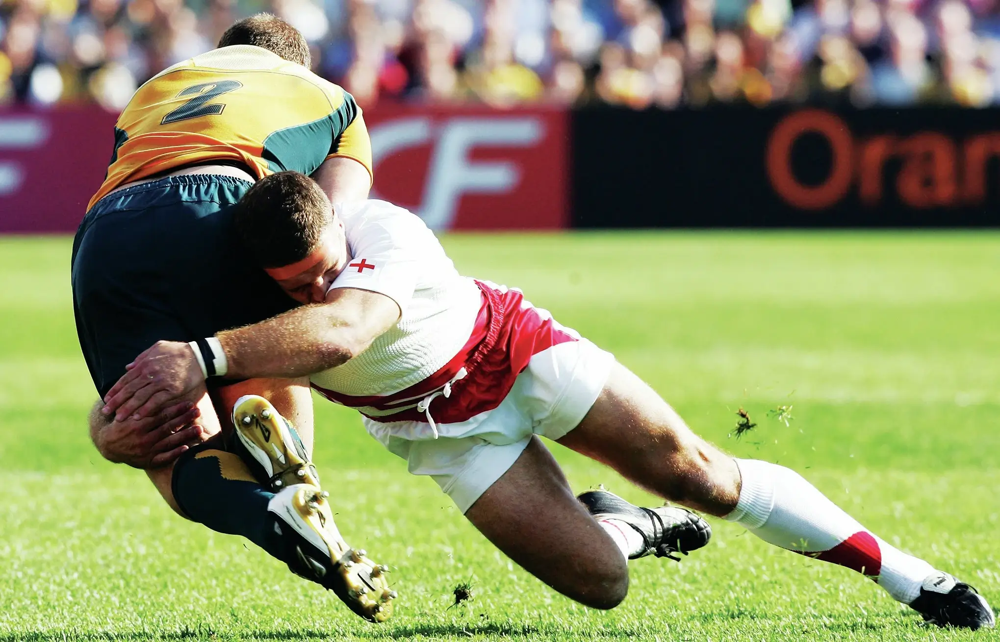
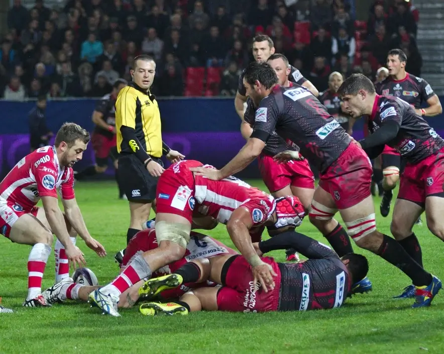
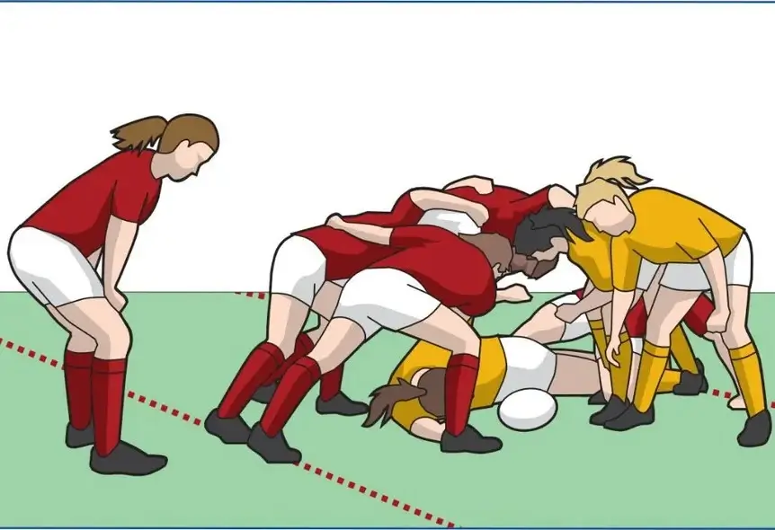
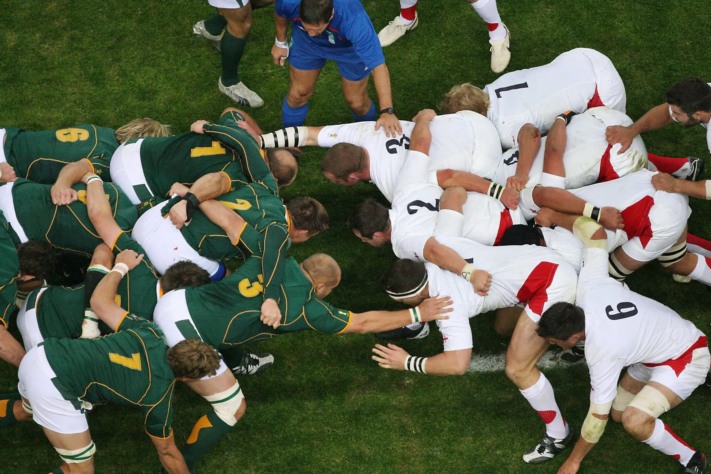
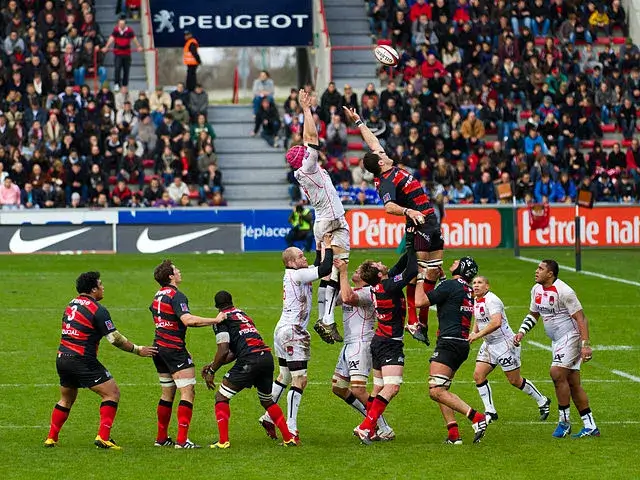

Rules of the game
-

The primary objective of rugby is to carry the ball across the opponent's goal line and ground it to score points. Players can advance with the ball in hand, but can only pass (throw the ball) directly across the field (flat), or back in the direction of the passer's own goal line (backwards). While kicking the ball forwards is allowed, only the kicker and players positioned behind them at the moment of the kick are allowed to catch it. This is the predominant style of gameplay throughout the 90-minute match and is commonly referred to as 'Open Play'.
A 'Knock-on' occurs when a player mishandles the ball and it travels forward off their hand or arm, hitting the ground or another player. The same ruling applies if a player drops the ball forward when being tackled or when a player passes the ball to a teammate that is further ahead than them, known as a 'Forward Pass'. These infractions are punishable by a scrum being awarded to the opposition, therefore a turnover of possession.
-

Points can be scored through various means, the most common being a 'Try', where a player forces the ball to the ground over the opponent's goal line, earning five points.
Following a try, a 'Conversion' can be attempted for two additional points by kicking the ball over the crossbar (between the posts) from a place in line with where the try was scored.
Three points can be gained from a 'Drop-goal', when a player drops the ball onto the ground and kicks it over the crossbar in open play, or by choosing to kick the ball over the crossbar when awarded a penalty.
-

'Tackling' is used by the defending team to stop their opposition from advancing, but only the ball-carrier can be tackled. A tackle occurs when the ball-carrier is held by one or more opponents and is brought to the ground. Tackling can be unsafe when not performed properly, so rules are in place to protect all players involved. Players must not tackle an opponent above the line of the shoulders, this is called a 'High Tackle' and can incur heavy sanctions.
To maintain the continuity of the game, the ball-carrier must release the ball immediately after the tackle, typically by presenting it as far away from the opposition as possible. The tackler must release the ball-carrier and, when possible, both players must roll away from the ball. This allows other players to come in and contest for the ball, known as a 'Ruck'.
-

A 'Ruck' is formed if the ball is on the ground and one or more players from each team who are on their feet close around it. Players must not handle the ball in the ruck, and must use their feet to move the ball or drive over it so that it emerges at the team's hindmost foot, at which point it can be picked up. Rucks can involve as many or as few players as required, but each must join the ruck from behind, entering from the side will incur a penalty.
A 'Maul' occurs when three or more players, including the ball carrier and at least one other player from either side, are in contact together. What makes a maul different to a ruck is that the ball is not on the ground, but in a standing player's hands. Either side can use this opportunity to gain territory by driving the maul towards their opponent's goal line. The ball can be handed backwards between the players in the maul and passed out of it if needed. Similar to a ruck, mauls can involve as many players as required, but they must join from behind.
-

In Rugby Union, the 'Offside' rule regulates the positioning of players relative to the ball and their teammates. When a player is offside, they are in a position that gives them an unfair advantage or impedes opponents. In general, players must stay behind the ball carrier or behind the ball when it's on the ground.
During 'Set Pieces', like scrums and lineouts, players must stay behind the hindmost foot of their own team. If they are ahead of these positions, they are offside. If the team involved in a maul or scrum are able to gain territory by driving up the field, the offside line moves forward with them, always on the back foot of the hindmost player. Additionally, players are not offside if they are behind the ball when it is kicked by a teammate. While it's not necessarily an offence to be in an offside position, if the player then interferes with play in any way, referees can award a penalty to the opposing team.
-

The 'Scrum' serves as a means of restarting play following minor infractions or when the ball becomes unplayable in a ruck or maul. Each team forms an eight-player 'Pack' by linking arms and shoulders, with the front three known as the 'Front Row'. The scrum engages when the heads of the opposing front rows interlock, and the scrum-half throws the ball into the tunnel between packs. The opposing hookers compete for possession by hooking it back with their feet.
The winner of the scrum can choose to keep the ball on the ground and attempt to gain territory by driving the opposition down the field, or the scrum-half can collect the ball from the back of the scrum and pass it to the rest of the team to resume open play.
-

If the ball goes off the field at the side, known as going into touch, a 'Lineout' is used to restart play. The forwards assemble in two lines, perpendicular to the touchline and one metre apart. The hooker then throws the ball down the corridor between the two lines, typically at a height requiring the receiver to be lifted by their teammates.
The team that throws the ball can gain the advantage by deciding ahead of time which player will be lifted to receive the throw, leaving the opposing players little time to react. As the opposition cannot touch the catcher whist they are in the air, they can choose to either pass the ball to the scrum-half to resume open play, or keep hold of it as they come to the ground and form a maul.